One live map of network health, incidents, field force and capacity across eight metros. Served from Lakebase in milliseconds, governed by Unity Catalog, and delivered as a Databricks App that operations teams use with drag and drop.
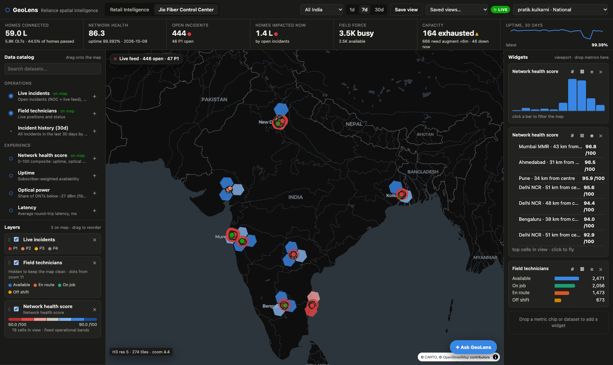
Jio Fiber operations teams need a single, trusted view of how the network is performing for customers, where it is failing right now, and where the field force should go next. GeoLens provides that view as an interactive map built on the Databricks Data Intelligence Platform, in the spirit of commercial location-intelligence tools, but running entirely on the customer's own lakehouse data and governance.
A home broadband network at Jio's scale generates signals from many systems: network management alarms, ONT optical telemetry, OLT port utilisation, trouble tickets, workforce positions and the subscriber base. Each team typically sees one slice in one tool. The questions the NOC and regional leadership actually ask are spatial and cross-cutting:
| Persona | Questions they need answered in seconds |
|---|---|
| NOC lead | What is broken right now, how many homes are affected, which incidents are critical, and who is the nearest available technician? |
| Regional head | Which localities in my region have degrading customer experience this week, and is it optical, capacity or field related? |
| Capacity planner | Which OLTs are exhausted or will exhaust within six months, and where should we augment or split PON ports? |
| Field operations | Where are my technicians, who is free, and are dispatches matching incident severity? |
| Growth and sales | Where are homes passed but not connected, where is premium plan mix low, and where are Reliance Retail customers who do not yet have Jio Fiber? |
The solution therefore had to meet five requirements that were set at the start:
To demonstrate behaviour at realistic scale without using customer data, we generated a synthetic but internally consistent Jio Fiber network for eight metros: Mumbai MMR, Pune and Ahmedabad (West), Delhi NCR (North), Bengaluru, Hyderabad and Chennai (South), and Kolkata (East). Every dataset is keyed to the same geography so that layers line up exactly on the map.
| Dataset | What it represents | Grain | Volume |
|---|---|---|---|
| Demographic grid | Population and households on a fine hexagon grid, the base for coverage and penetration | H3 res 9 cell | 160,148 cells · 72.4 M people |
| OLTs | Optical Line Terminals with vendor model, PON ports, split ratio, homes passed and connected, utilisation, capacity status | OLT | 5,841 |
| FDH cabinets | Fiber distribution hubs (splitter cabinets) with 7-day health | Cabinet | 24,261 |
| Subscribers | Connected homes with plan, tenure and serving OLT and FDH | Home | 5,904,185 |
| Homes passed | Homes within reach of the fiber network | OLT area | 13.3 M |
| Fiber routes | Feeder and distribution cable segments as line geometry, with 30-day cut counts | Segment | 30,102 |
| Network incidents | Fiber cuts, LOS alarm clusters, power failures, FDH damage, card failures, planned work; severity P1 to P4, homes impacted, root cause | Incident | 25,605 (30 days) |
| Trouble tickets | Customer complaints linked to homes and incidents | Ticket | 318,874 |
| Technicians | Field force with skill, shift, status and live position | Technician | 6,673 |
| OLT hourly telemetry | Port utilisation, uplink utilisation, alarms and status per hour | OLT × hour | 4.24 M rows |
| Network experience, daily | Health score, uptime, optical power, latency, loss, throughput, tickets, incidents per hexagon per day, rolled up at five resolutions | H3 res 5 to 9 × day | 5.23 M rows |
| Daily KPIs | Metro-level network KPIs for trend lines | Metro × day | 240 |
| Access entitlements | Which person or role may see which region or metro | Principal × scope | 12 rules |
The design keeps one copy of the truth in the lakehouse and pushes a serving copy into Lakebase, the Databricks managed Postgres database, for low-latency map queries. Governance is defined once in Unity Catalog and enforced at both layers.
Figure 1. Data flows left to right. Entitlements flow from Unity Catalog into Lakebase so both layers enforce the same scope.
| Choice | Why |
|---|---|
| H3 hexagons at resolutions 5 to 9 | Equal-area cells that aggregate cleanly. The map picks a resolution from the zoom level and requests fixed tiles of at most 343 cells, so every request is small and cacheable. |
| Lakebase as the serving layer | Map interactions need single-digit to tens of milliseconds per request and thousands of concurrent users. Lakebase gives Postgres latency and concurrency, with tables synced from Unity Catalog instead of hand-built ETL. |
| Read replica for map traffic | Tile and point reads go to a read-only endpoint; writes (dispatches, saved views) go to the primary. |
| PostGIS vector tiles | Fiber routes are line geometry. PostGIS renders them as vector tiles on demand, so tens of thousands of cable segments stay fast. |
| Push, not poll | Postgres notifications drive server-sent events to every open browser. Only the layers whose data changed are refetched. |
| One entitlement model | The same region and metro scope table drives Unity Catalog row filters for analysts and Postgres row-level security for app users. |
The screenshots below were captured live from the Lakebase endpoint during end-to-end testing. They show the synced Jio Fiber tables, sample rows the map reads, the live operational tables the app writes, and the change tracking that drives automatic refresh.
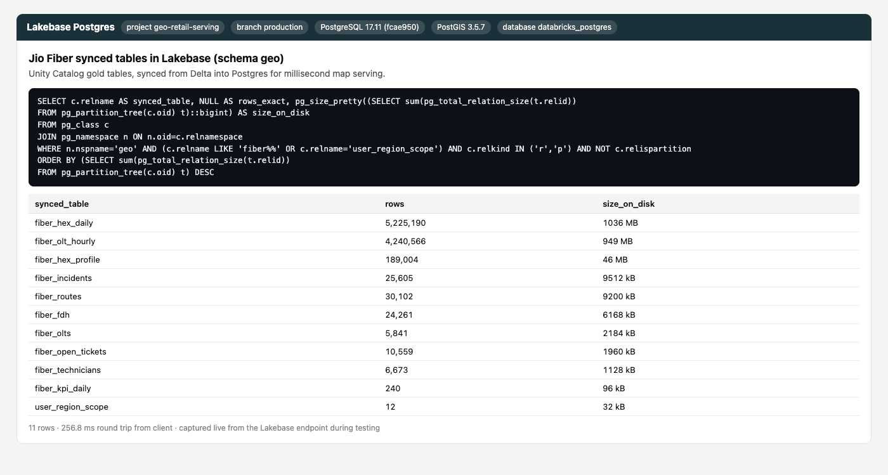
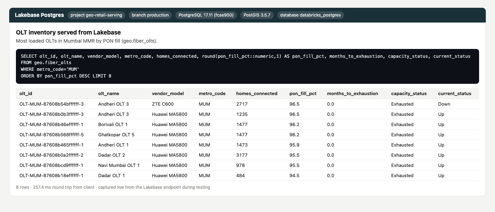
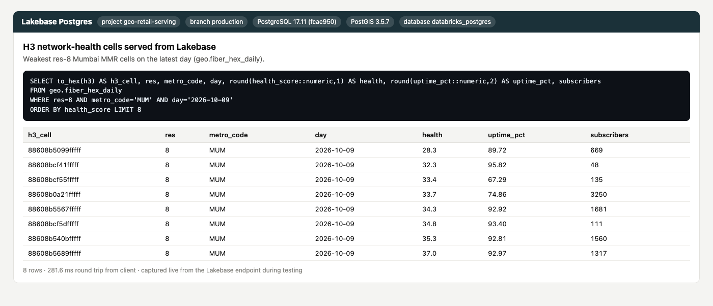
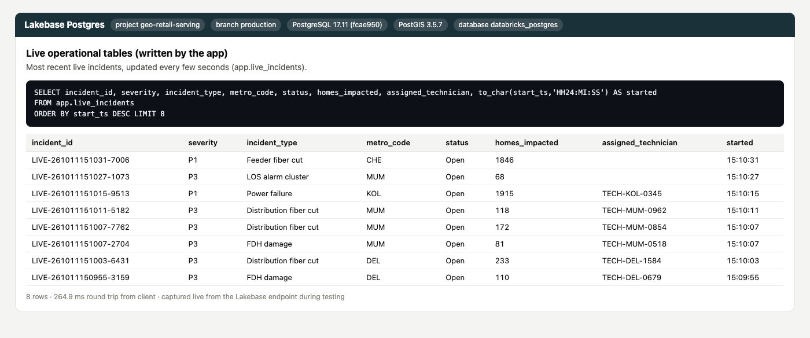
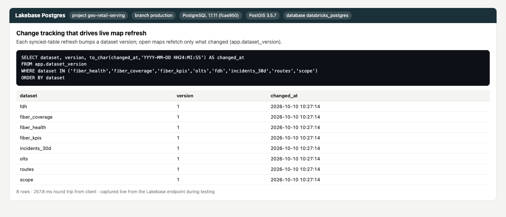
Access is defined once, in a Unity Catalog table that maps each person or role to a scope: national, one or more regions, or one or more metros. That single definition is enforced in two places.
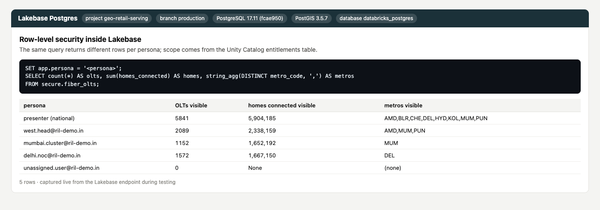
| Persona | Scope | OLTs visible in Lakebase | OLTs visible via Unity Catalog filter |
|---|---|---|---|
| National view | All India | 5,841 | 5,841 |
| Regional Head, West | West region | 2,089 | 2,089 |
| Cluster Manager, Mumbai MMR | Mumbai metro | 1,152 | 1,152 |
| NOC Lead, Delhi NCR | Delhi metro | 1,572 | 1,572 |
| Ops Lead, South + Mumbai | South region and Mumbai metro | 2,773 | 2,773 |
| User with no entitlement | None | 0 | 0 |
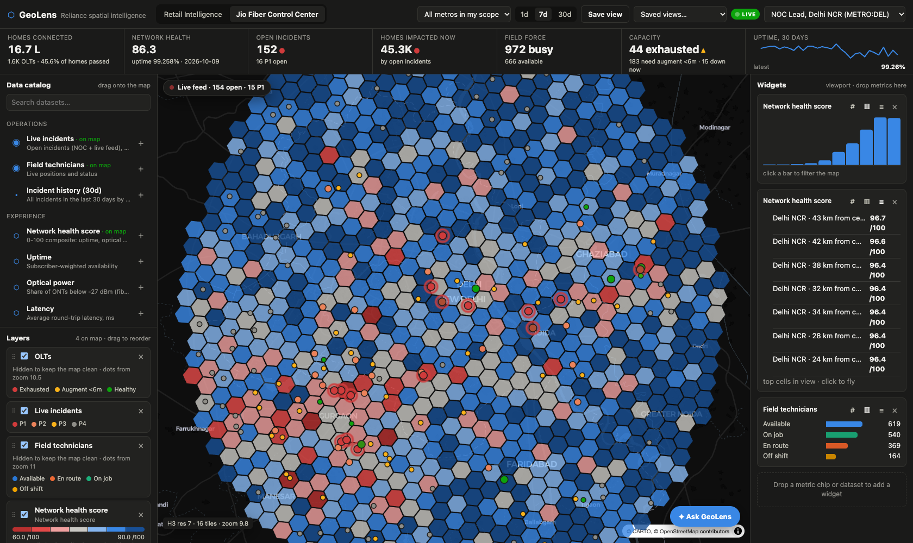
This walkthrough follows a NOC lead through a typical session. Every screenshot was captured from the deployed app during the end-to-end test run described in section 9.
The control center opens on the national view with only live incidents switched on, so nothing distracts from what is broken right now. Each dot is an open incident coloured by severity. Critical P1 incidents glow continuously until they are fixed. The KPI strip shows homes connected, network health, open incidents, homes impacted, field force and capacity at a glance. Network health and technicians are already in the layer list, switched off, ready when needed.
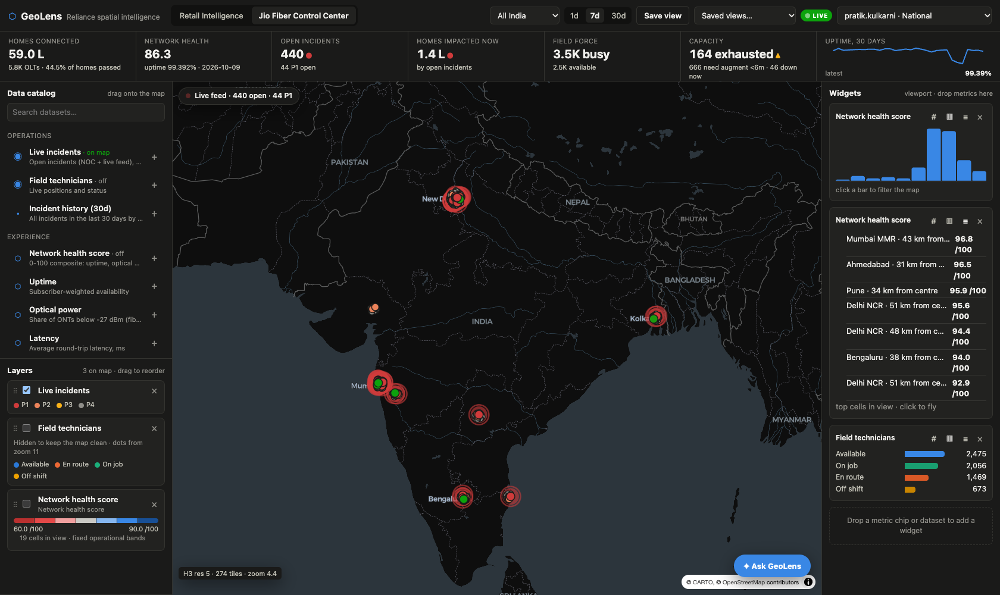
The live feed lists the newest incidents as they arrive. Clicking one flies the map to it and opens the incident panel: type, severity, homes impacted, start time, root cause and the five nearest available technicians with their skills and distance.
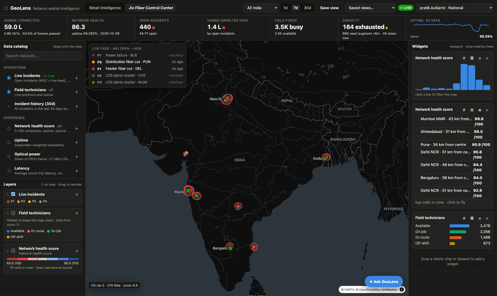
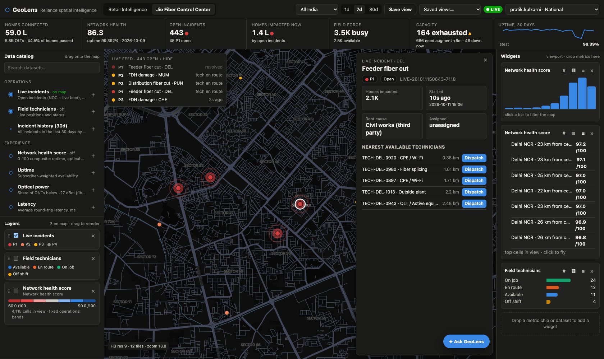
Dispatch assigns the chosen technician. The assignment is written to Lakebase, every connected screen is notified, and the technician starts moving towards the job on the map.
Ticking Network health score adds customer experience to the map. At national zoom, cells are rolled up into larger hexagons so each metro stays readable. Colours use fixed operational bands (red below 60, blue above 90), so a red area means a real problem, not just the worst of a good set.
Clicking a hexagon zooms to exactly that area and shows only the detail inside it. A breadcrumb records the path, and Back returns to the previous view.
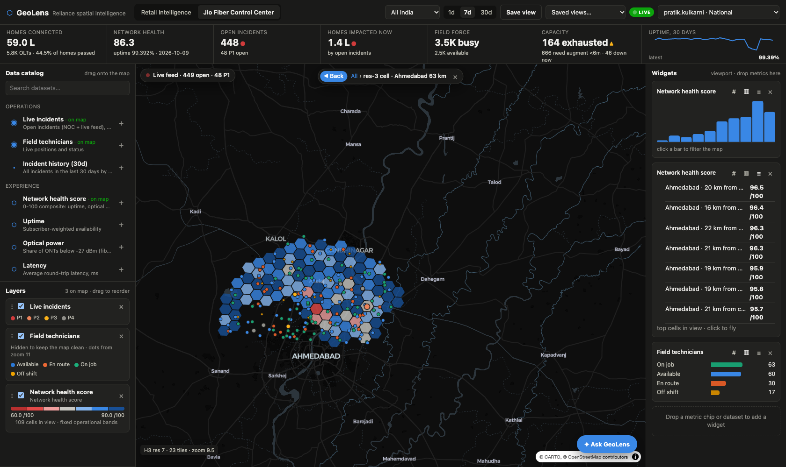
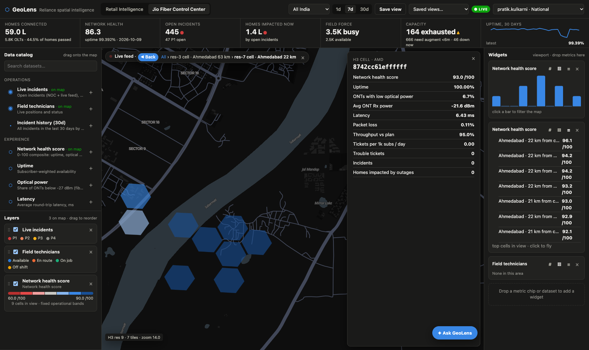
Choosing a metro in the top bar restricts everything on screen to that metro: map, KPIs, widgets, live feed and the AI assistant. The histogram and top-cells widgets recompute for the area in view, and a click on any bar filters the map.
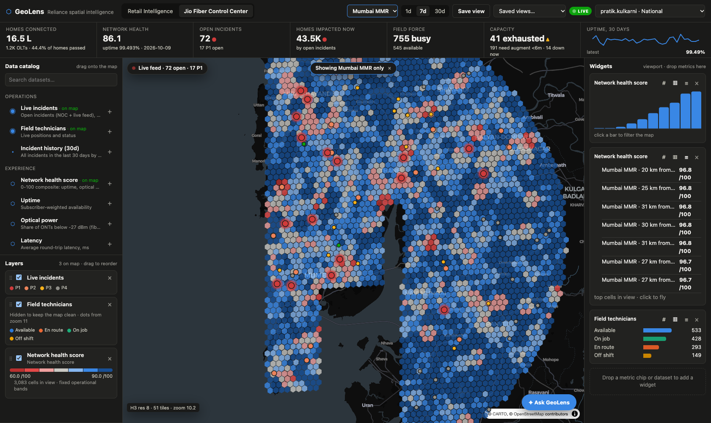
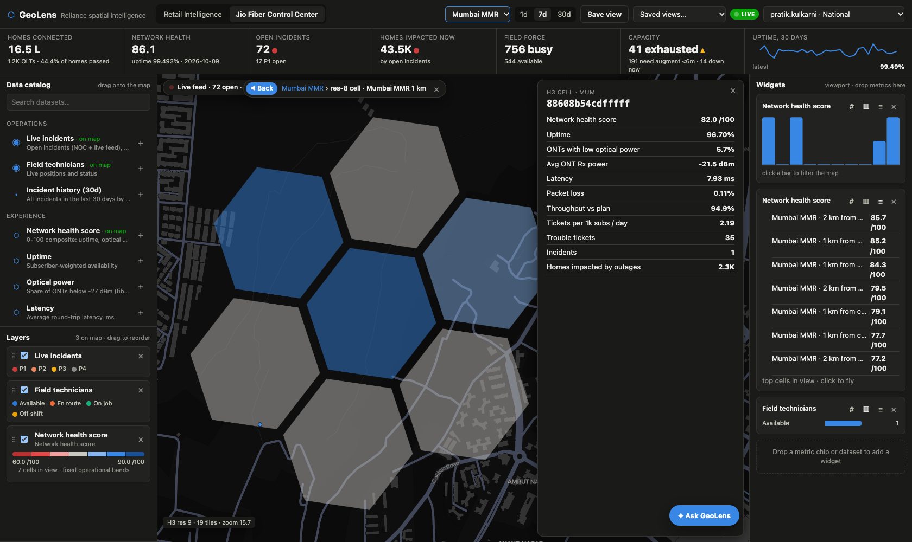
The assistant answers operational questions in plain language. It queries the same governed data the map uses, respects the user's scope and the selected metro, and acts on the map: it adds layers, flies to places, highlights cells and opens the relevant OLT.
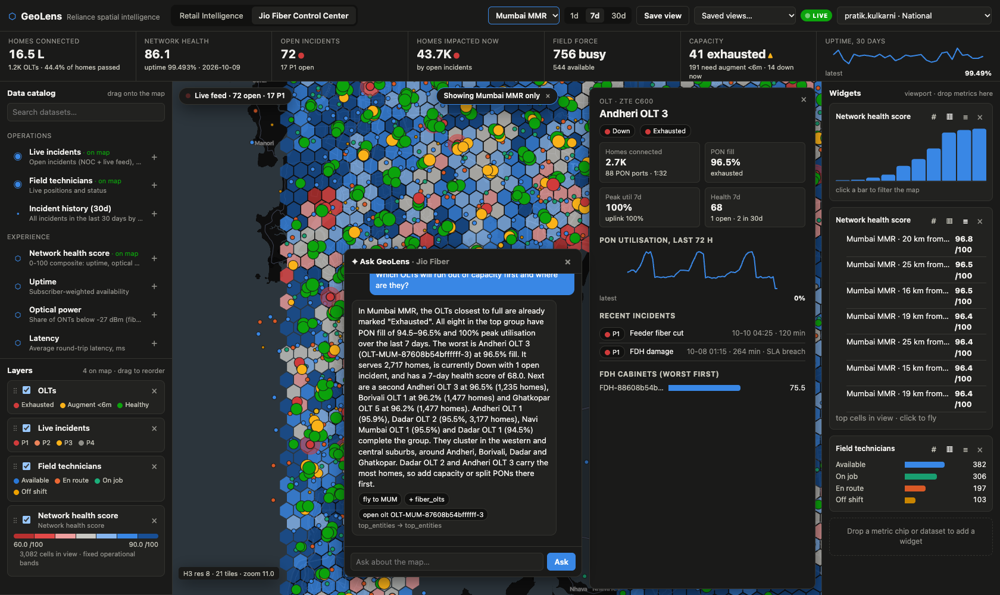
The data catalog on the left groups 17 layers into Operations, Experience, Growth and Network. Users drag a layer onto the map or into the widget rail, reorder layers by dragging, change the metric, colour and size, and save the view to share with colleagues. No SQL or code is needed.
| Group | Layers available |
|---|---|
| Operations | Live incidents, field technicians, incident history (30 days) |
| Experience | Network health score, uptime, optical power, latency, trouble tickets, outage impact |
| Growth | Penetration, sales opportunity (passed, not connected), build-out opportunity, premium plan mix, Reliance Retail cross-sell |
| Network | OLTs by capacity status, FDH cabinets by health, fiber routes with cuts highlighted |
Switching to the Delhi NOC persona (Figure 8) shows the entitlement model at work: the same app, the same map, but only Delhi data, enforced in the database rather than in the screen.
Two kinds of change reach the map automatically, with no page reload.
Most of this time is the synced-table refresh itself. Refreshes can be scheduled or triggered when the upstream gold table changes; live operational data does not wait for them.
| Measured during testing (OLT inventory change) | Run 1 | Run 2 |
|---|---|---|
| Update written to the Delta table in Unity Catalog | 0 s | 0 s |
| Synced table refresh triggered | 6 s | 5 s |
| Change detected; "dataset changed" event pushed to all open maps | 32 s | 56 s |
| App serving the new value | 33 s | 58 s |
| Open browser updated its widgets after the event (no reload) | 1 to 2 s | 1 to 2 s |
The deployed solution was tested end to end on 11 October 2026: platform, API, security, data parity, live updates, freshness and the full browser storyline. Browser tests used real mouse clicks in a headless Chrome session against the production app URL.
| Area | What was checked | Result |
|---|---|---|
| Platform | App running on 4 instances; Lakebase primary and read replica active; PostgreSQL 17 with PostGIS 3.5 | Pass |
| API | Every route: metadata, catalog, H3 tiles, ETag revalidation (304), points, vector tiles, KPIs, OLT and incident detail, live feed (full and delta), dispatch, saved views, health, event stream | Pass (all routes) |
| Postgres row-level security | Five personas plus a user with no entitlement, on OLTs, stores, health cells and live tables | Pass |
| Unity Catalog governance | Row filters attached to all 17 gold tables; filter logic per persona returns exactly the Lakebase counts | Pass |
| Data parity | Row counts identical in gold Delta, the serving copy and Lakebase (for example 5,225,190 health rows, 5,841 OLTs, 25,605 incidents) | Pass |
| Live operations | Simulator leader active; incidents and technician positions updated within seconds; live events received over the stream | Pass |
| Freshness | Delta change to app in 33 to 58 s across runs; open browser updated without reload | Pass |
| Browser storyline | 13 scripted steps (Section 7): landing, live feed, incident, dispatch, national health, two-level drill, Back, metro focus, street-level cell, AI assistant, persona | Pass, 13 of 13 |
| Browser health | Console errors and failed app requests across the full walkthrough (about 790 API requests) | 0 errors, 0 failures |
| Observation | Change |
|---|---|
| Health hexagons were too small to see at national zoom | Cells now roll up into larger hexagons when zoomed out (sums for counts, averages for rates), and remain clickable |
| Drilling a national hexagon framed a mostly empty area | Drill now fits the area that actually contains data |
| The breadcrumb ran under the details panel | Breadcrumb now centres on the visible part of the map |
| The assistant panel covered the details panel | The assistant now opens beside the details panel |
| Catalog marked switched-off layers as "on map" | Catalog now distinguishes "on map" from "off", and adding a switched-off layer turns it on |
| Empty widgets after drilling into a quiet area | Widgets now say "None in this area" |
| P1 glow was faint at metro zoom | Glow and ripple made stronger and consistent at every zoom |
Load tests ran from a Databricks serverless job in the same cloud region as the app, simulating map users who pan, zoom and refresh with HTTP/2 connections, as browsers do.
| Scenario | Throughput | Errors | Server time per tile |
|---|---|---|---|
| 150 users, no think time (saturation) | 299 req/s | 0 | p50 12.8 ms · p95 35 ms |
| 1,000 users on 1 app instance | 206 req/s | 0.07% | p50 18 ms |
| 1,000 users on 4 app instances | 182 req/s | connection limits | p50 24 ms |
| Metric | Definition | Better when |
|---|---|---|
| Network health score | 0 to 100 composite of uptime, optical margin, latency, packet loss, throughput against plan and trouble tickets, weighted by subscribers | Higher |
| Uptime | Subscriber-weighted availability over the selected period | Higher |
| ONTs with low optical power | Share of ONTs receiving below -27 dBm, an early sign of fiber degradation | Lower |
| Average ONT receive power | Mean optical receive power at the customer terminal, in dBm | Higher |
| Latency | Average round-trip latency, in milliseconds | Lower |
| Packet loss | Share of packets lost | Lower |
| Throughput against plan | Delivered speed as a share of the subscribed plan speed | Higher |
| Tickets per 1,000 subscribers per day | Trouble ticket rate normalised by subscriber base | Lower |
| Homes impacted by outages | Homes affected by incidents in the period | Lower |
| PON fill | Connected homes as a share of PON port capacity on an OLT | Below threshold |
| Capacity status | Exhausted, Augment within six months, or Healthy, from PON fill, peak utilisation and growth | Healthy |
| Penetration | Homes connected as a share of homes passed | Higher |
| Sales opportunity | Homes passed but not connected | Context |
| Retail cross-sell | Reliance Retail customers in the area without Jio Fiber | Context |
| H3 | A global grid of hexagonal cells at multiple resolutions. Resolution 5 cells are about 250 km², resolution 9 cells about 0.1 km². |
| OLT | Optical Line Terminal, the exchange-side equipment that serves many homes over passive optical splitters. |
| PON | Passive Optical Network, the shared fiber tree from an OLT port to homes. |
| FDH | Fiber Distribution Hub, the street cabinet that holds splitters. |
| ONT | Optical Network Terminal, the device in the customer's home. |
| Lakebase | Databricks managed Postgres, integrated with Unity Catalog and able to sync tables from the lakehouse. |
| Synced table | A Lakebase table kept in step with a Unity Catalog Delta table without custom pipelines. |
| Row filter / RLS | Database rules that return only the rows a user is entitled to see, applied by Unity Catalog and by Postgres row-level security. |
| Databricks App | A web application hosted on Databricks with workspace sign-on and direct, governed access to platform data and AI. |
GeoLens is built on Databricks platform services for data, governance, serving, hosting and AI, with permissively licensed open-source libraries for the map experience.
| Layer | Technology | Role in GeoLens |
|---|---|---|
| Storage and processing | Delta Lake on Unity Catalog (bronze, silver, gold) | Source data, cleaning, H3 indexing and KPI rollups at H3 resolutions 5 to 9 |
| Compute | Serverless SQL warehouse | Builds the data model using built-in H3 and spatial SQL functions |
| Governance | Unity Catalog | Row filters on 17 gold tables, one entitlements table for region and metro scope, documented tables and columns |
| Serving database | Lakebase (managed PostgreSQL 17 with PostGIS 3.5), primary and read replica | Millisecond map queries, vector tiles for fiber routes, row-level security, live operational tables |
| Lakehouse to Lakebase | Synced tables | Keeps 18 gold tables in step with Postgres without custom pipelines |
| Application hosting | Databricks Apps | Hosts the API and web interface with workspace single sign-on and a least-privilege service identity |
| AI | Foundation Model APIs through AI Gateway | Powers the Ask GeoLens assistant, which queries governed data and drives the map |
| Testing and operations | Lakeflow Jobs (serverless) | In-region load testing |
| Component | Technology |
|---|---|
| API framework | Python with FastAPI and Uvicorn |
| Database access | psycopg2 with a pooled, automatically refreshed OAuth connection to Lakebase |
| Live updates | PostgreSQL LISTEN/NOTIFY, delivered to browsers as server-sent events |
| Change detection | A single elected background worker detects synced-table refreshes and advances dataset versions |
| Performance | Shared caches keyed by scope and dataset version, ETag revalidation, compression, server timing metrics |
| Component | Technology |
|---|---|
| Web framework | React 18, built with Vite |
| Map visualisation | deck.gl 9 (hexagon, point, vector tile and line layers) |
| Map engine | MapLibre GL, integrated through react-map-gl |
| Hexagon grid | H3 (h3-js) for roll-ups, drill-down and cell geometry |
| Basemap | Dark Matter and Positron vector basemap styles over OpenStreetMap data, currently served from a public basemap CDN; can be replaced by a basemap self-hosted inside Databricks |
| Charts and widgets | Lightweight custom SVG components with colourblind-safe palettes |
All non-Databricks components are permissively licensed: React and deck.gl (MIT), MapLibre GL (BSD), H3 (Apache 2.0), PostgreSQL and PostGIS (PostgreSQL licence and GPL for the PostGIS server extension, used as a managed service). Map data is from OpenStreetMap (ODbL), credited on the map. The only external service in the current build is the basemap CDN.
GeoLens was built to run entirely on Databricks and open-source software. In the current build there is one remaining third-party dependency: the background basemap is loaded from CARTO's public basemap service. This appendix explains exactly what that dependency covers and how it is removed.
| Item | Today | Effect |
|---|---|---|
| Basemap styles | Dark Matter (Jio Fiber view) and Positron (light view), loaded from basemaps.cartocdn.com | The grey or dark background map: roads, water, land use, place names and borders |
| Basemap tiles | Vector tiles served by CARTO's content delivery network | Each user's browser downloads background tiles directly from CARTO |
| Fonts and map icons | Label fonts and sprites referenced by the CARTO styles | Used to draw place names on the background map |
| Attribution | "© CARTO, © OpenStreetMap contributors" shown on the map | Required while CARTO's service is used |
No CARTO account, API key, software development kit or paid service is used anywhere in GeoLens.
| Option | Look compared with today | Where it runs | Licence |
|---|---|---|---|
| OpenMapTiles data with the open Dark Matter and Positron styles | Nearly identical; same colours, fonts and layering | Inside Databricks | Open (BSD, CC-BY 4.0, ODbL) |
| Protomaps with its own light and dark themes | Similar minimal feel, different palette and labels | Inside Databricks | Open (BSD, ODbL) |
| OpenFreeMap public service | Very close | Volunteer-run public servers | Open, but an external dependency |
| Commercial basemap providers | Close | Provider cloud | Paid licence |
The Dark Matter and Positron styles are themselves open source, published through the OpenMapTiles project. Keeping them preserves the look users already know, while the tiles, fonts and icons move inside the Databricks environment.
| Step | What happens |
|---|---|
| 1. Build the basemap | Generate OpenStreetMap vector tiles in the OpenMapTiles schema for India, with full street detail for the served metros, using the open-source Planetiler tool on Databricks serverless compute. |
| 2. Store it in Databricks | Keep the tile archive in a Unity Catalog Volume and load the tiles into Lakebase, so the basemap is served the same governed, low-latency way as the network data. |
| 3. Serve it from GeoLens | Add a basemap tile endpoint to the GeoLens app with caching and revalidation, and bundle the open label fonts and map icons with the application. |
| 4. Switch the map | Point the map engine at self-hosted copies of the Dark Matter and Positron styles and update the on-map attribution. |
| 5. Verify | Rerun the end-to-end storyline and confirm the browser makes no requests to any external map service. |
| 6. Keep it current | Rebuild the basemap on a schedule with Lakeflow Jobs to pick up new roads and places from OpenStreetMap. |